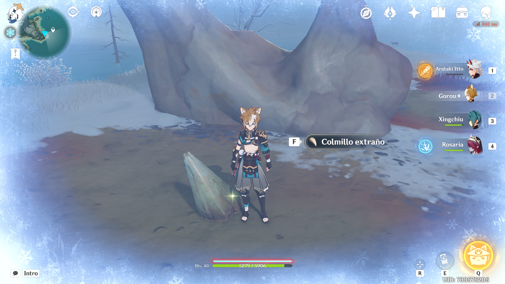

Una pequeña guía para conseguir la lanza de Espinadragón.
Descripción
En el día de hoy seré vuestro guía para conseguir esta arma de las cuatro exclusivas de Espinadragón.
Nos teletransportaremos al punto de teletransporte situado más a la derecha en el mapa.
Nos dirigiremos a la orilla, donde deberemos eliminar al Lawachurl para poder acceder a donde se encuentra el colmillo.
Una vez lo recojamos, se activará la misión El diente ponzoñoso, en la cual recibiremos de recompensa la lanza y un plano de la forja para el arma.
La misión nos guiará al campamento en la entrada de la montaña, donde el armero nos pedirá que recojamos otros 3
colmillos más.
La ubicación de los colmillos se marcará automáticamente en tu mapa.
Los colmillos son fáciles de encontrar, simplemente debes tener cuidado con los enemigos y con el frío extremo.
Para conseguir la lanza necesitarás además de los colmillos y el colmillo imbuido que ganarás luego en la cueva
del Valle Dragondurmiente, 50 piezas de Argento Estelar y un Prototipo de lanza del Norte.